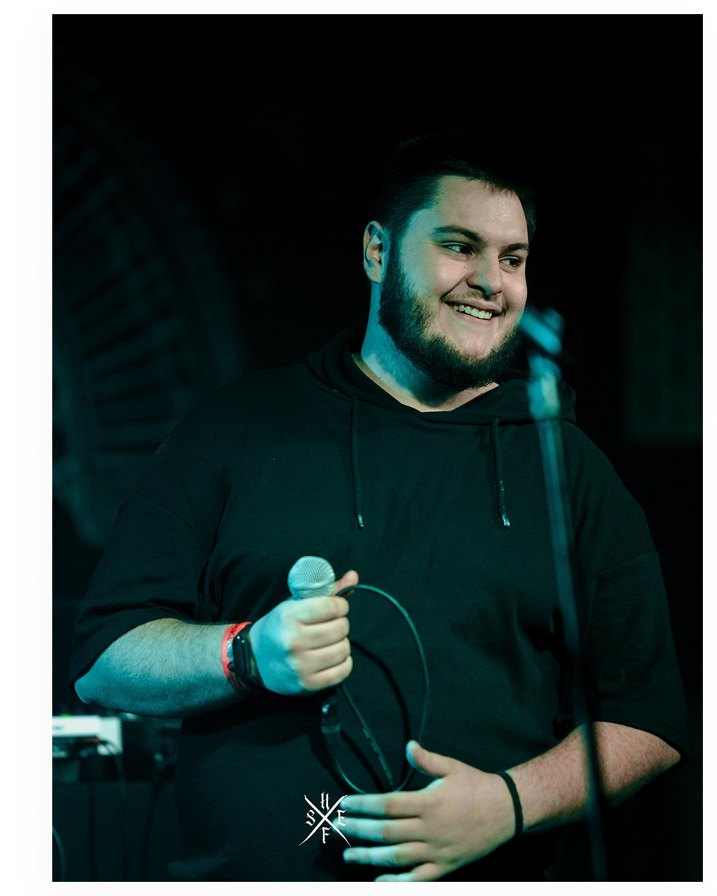

Filip Tetec
I am a visual storyteller based in Koprivnica, Croatia, working at the intersection of intentional graphic design and atmospheric photography. Whether I am shaping a brand's physical identity or capturing the raw emotion of a portrait, my goal is always the same: to strip away the noise and focus on what matters.
Creativity doesn't keep regular office hours, and neither do I. As a natural night owl, I do my best work when the distractions fade, allowing me to dive deep into high-concept projects, intricate typography, and complex lighting setups.

What I Do
Portrait & Concept Photography
I don't just take pictures; I manipulate environment and mood. My specialty lies in portraiture, utilizing a deep understanding of light and shadow to create dramatic, high-contrast, and deeply authentic imagery.
Graphic & Brand Design
I create cohesive visual identities, packaging, and tactile design systems that connect with people. From minimalist line art to bold, nature-inspired branding, I build designs that are both functional and memorable.
Beyond the Lens
When I'm not sketching layouts or adjusting studio strobes, you can usually find me recharging in nature, experimenting with new recipes in the kitchen, or immersed in a tactical gaming session. I believe that a sharp mind requires diverse inspirations—and a sharp knife.